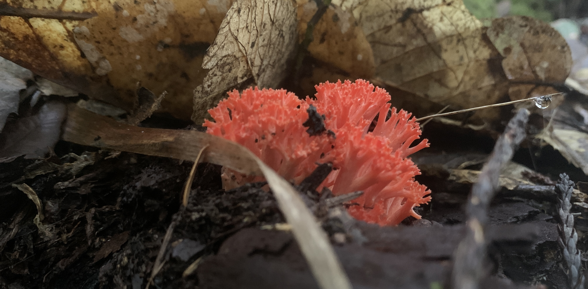
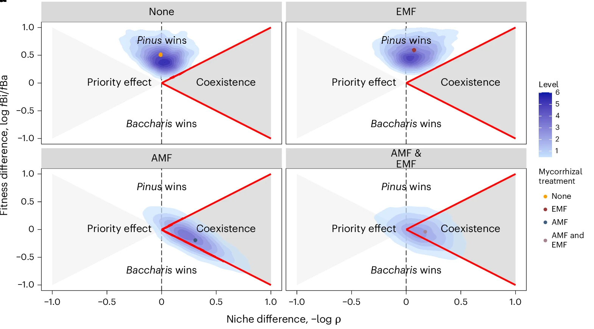
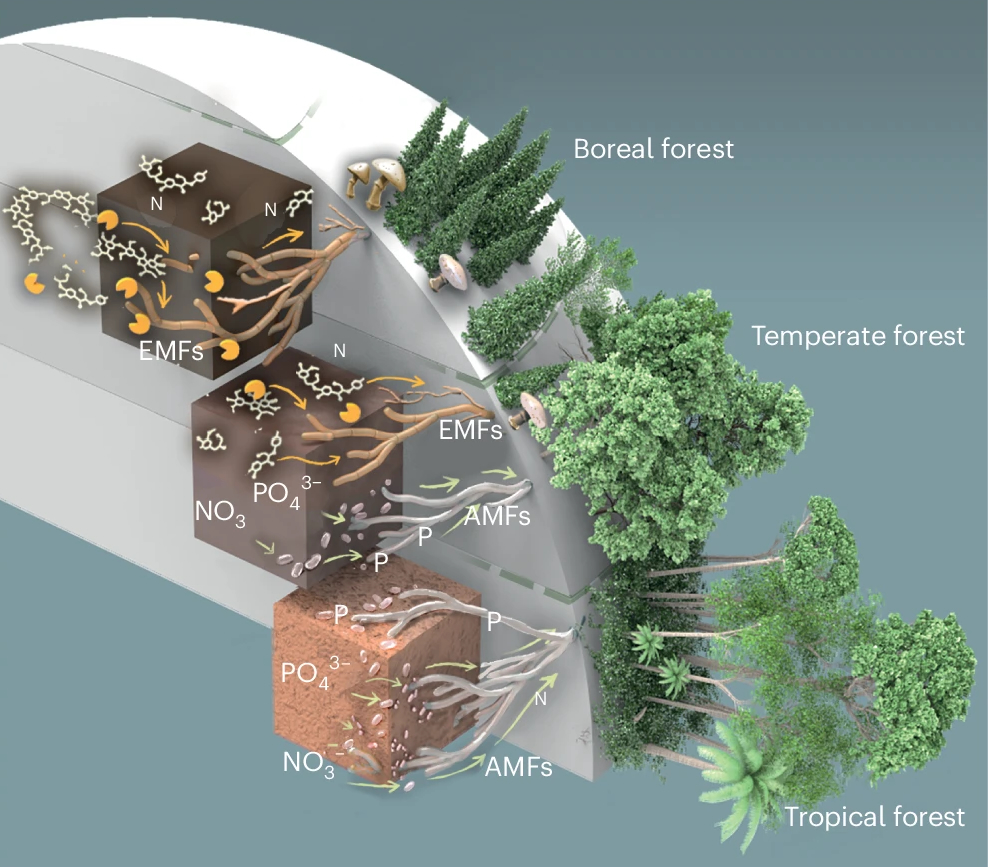
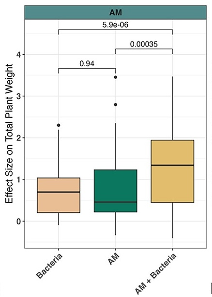
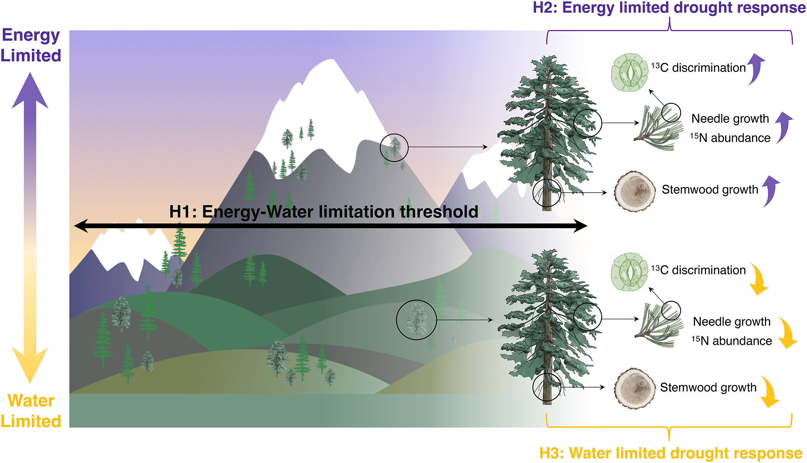
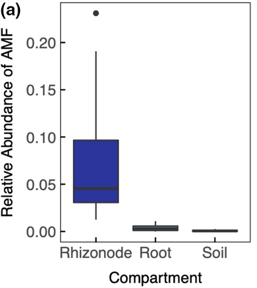
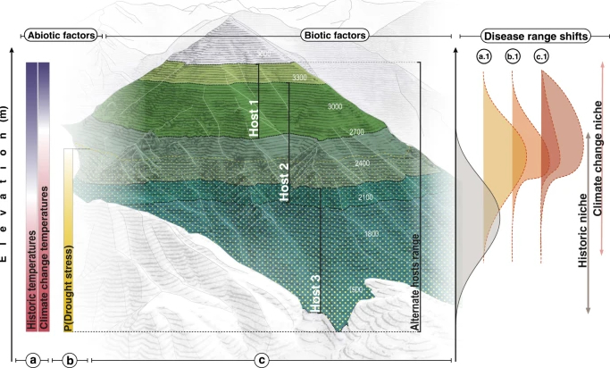
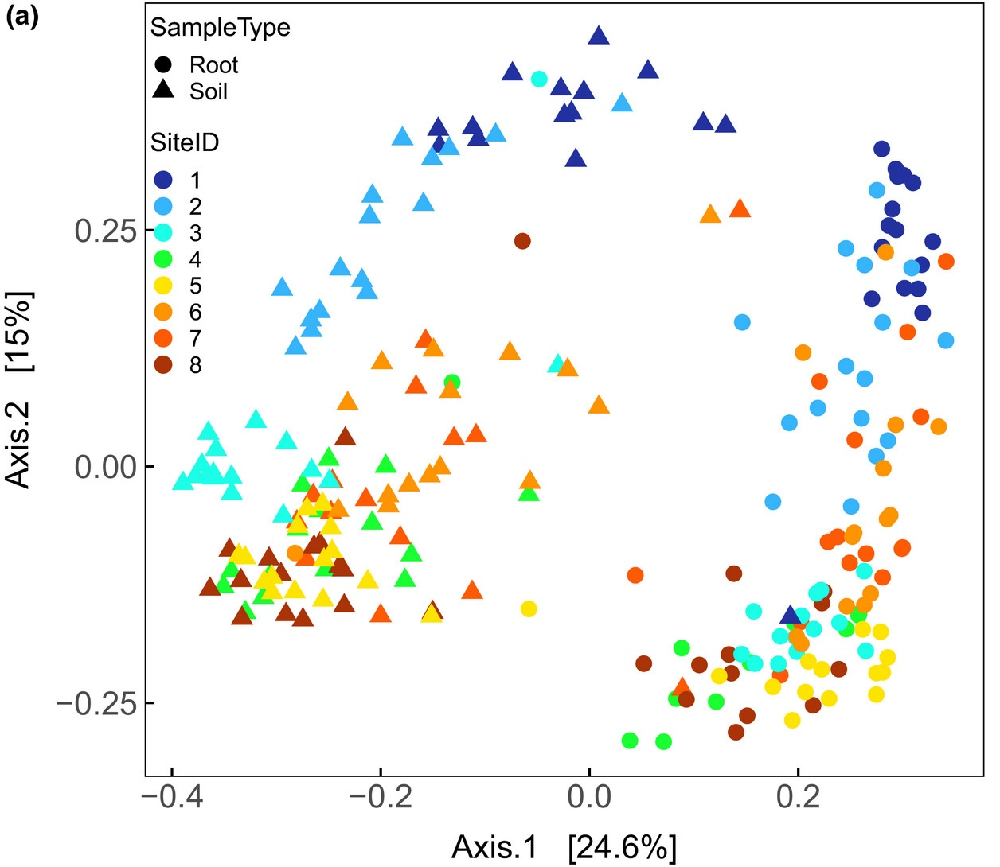

Willing, C. E., Wan, J., Yeam, J. J., Cesna, A. M., & Peay, K. G. (2024). Arbuscular mycorrhizal fungi equalize differences in plant fitness and facilitate plant species coexistence through niche differentiation. Nature Ecology & Evolution, 8(11), 2058–2071. doi.org/10.1038/s41559-024-02526-1

Willing, C. E., Pellitier, P. T., Van Nuland, M. E., Alvarez-Manjarrez, J., Berrios, L., Chin, K. N., Villa, L. M., Yeam, J. J., Bourque, S. D., Tripp, W., Leshyk, V. O., & Peay, K. G. (2024). A risk assessment framework for the future of forest microbiomes in a changing climate. Nature Climate Change, 14(5), 448-461. doi.org/10.1038/s41558-024-02000-7

Berrios, L., Venturini, A. M., Ansell, T. B., Tok, E., Johnson, W., Willing, C. E., & Peay, K. G. (2024). Co-inoculations of bacteria and mycorrhizal fungi often drive additive plant growth responses. ISME Communications, 4(1), ycae104. doi.org/10.1093/ismeco/ycae104

Dudney, J., Latimer, A. M., van Mantgem, P., Zald, H., Willing, C. E., Nesmith, J. C. B., Cribbs, J., & Milano, E. (2023). The energy‐water limitation threshold explains divergent drought responses in tree growth, needle length, and stable isotope ratios. Global Change Biology, 29(12), 3779-3790. doi.org/10.1111/gcb.16740

Willing, C. E., Pierroz, G., Guzman, A., Anderegg, L. D. L., Gao, C., Coleman-Derr, D., Taylor, J. W., Bruns, T. D., & Dawson, T. E. (2021). Keep your friends close: Host compartmentalisation of microbial communities facilitates decoupling from effects of habitat fragmentation. Ecology Letters, 24(12), 2674-2686. doi.org/10.1111/ele.13886

Dudney, J., Willing, C. E., Das, A. J., Latimer, A. M., Nesmith, J. C. B., & Battles, J. J. (2021). Nonlinear shifts in infectious rust disease due to climate change. Nature Communications, 12(1), 5102. doi.org/10.1038/s41467-021-25182-6

Willing, C. E., Pierroz, G., Coleman-Derr, D., & Dawson, T. E. (2020). The generalizability of water‐deficit on bacterial community composition; Site‐specific water‐availability predicts the bacterial community associated with coast redwood roots. Molecular Ecology, 29(23), 4721-4734. doi.org/10.1111/mec.15666